핵심 요약 - 기간: 2025-09-08 ~ 2025-10-09 - 기사 수: 2,762 - 토픽 수: 8 | 상위 키워드: 20
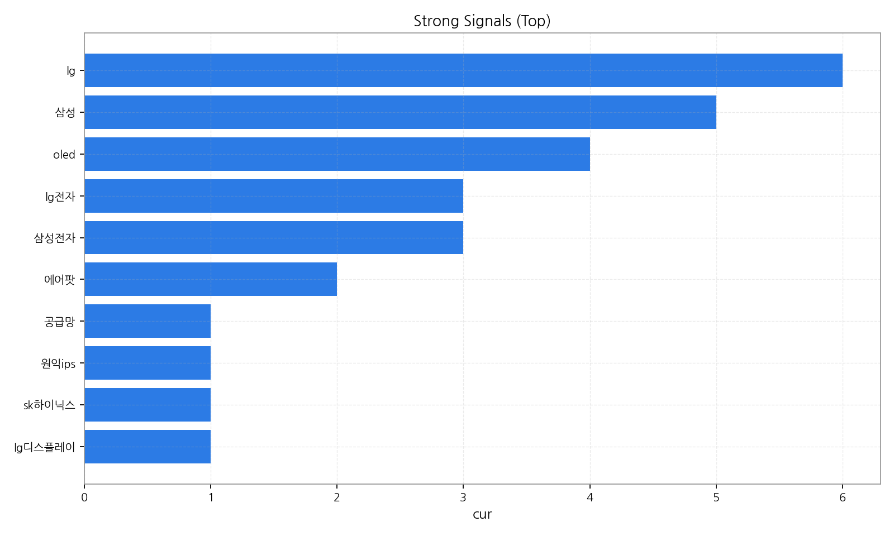
이번 주 하이라이트 - ## 데일리 인텔리전스 브리핑 - 1. 핵심 맥락: - * OLED 시장 경쟁 심화 및 기술 혁신 가속화: OLED가 디스플레이 시장의 중심으로 자리 잡으면서 삼성전자와 LG디스플레이를 중심으로 한 경쟁이 심화되고 있으며, AI 기술을 접목한 차세대 디스플레이 기술 개발이 활발하게 이루어지고 있습니다 (Topic 2, 3, 5, 7). 특히, 스마트폰, 자동차 등 다양한 분야에서 OLED 수요가 증가함에 따라, 패널 제조사들은 생산 능력 확대 및 기술 고도화에 집중하는 추세입니다 (Topic 6, 7). - * AI, 로봇, 반도체 융합을 통한 디스플레이 산업 혁신: AI와 로봇 기술이 반도체 산업과 융합되면서 디스플레이 제조 공정 자동화 및 효율성 향상에 기여하고 있으며, 차세대 반도체 기술은 디스플레이 성능 향상에 필수적인 요소로 작용하고 있습니다 (Topic 1, 4). 특히, AI 기반의 이미지 처리 기술은 디스플레이 화질 개선에 중요한 역할을 담당하며, 로봇 기술은 디스플레이 생산 라인의 자동화 및 정밀도를 높이는 데 기여하고 있습니다 (Topic 1, 2). - 2. 최근 변화/스파이크: - * 2025년 9월 30일 및 10월 1일 기사 수 급증: 해당 기간 동안 기사 수가 급증한 것은 OLED, AI, 반도체 관련 기술 혁신 및 시장 경쟁 심화에 대한 관심이 높아졌기 때문으로 추론됩니다. 특히, 애플, 삼성 등 주요 기업들의 차세대 디스플레이 기술 발표 및 투자 계획 발표가 기사 수 증가에 영향을 미쳤을 가능성이 높습니다. 또한, 차량용 디스플레이 시장의 성장과 함께 자동차, 반도체 관련 기사 수도 증가한 것으로 보입니다. - 3. 실무 인사이트: - * 차세대 디스플레이 기술 개발 로드맵 구체화: AI, 로봇, 반도체 기술과의 융합을 통해 디스플레이 성능을 극대화할 수 있는 차세대 기술 개발 로드맵을 구체화하고, 핵심 기술 확보를 위한 투자 및 연구 개발을 강화해야 합니다. - * OLED 시장 경쟁 우위 확보 전략 수립: OLED 시장 경쟁 심화에 대비하여, 차별화된 기술 경쟁력 확보 및 생산 효율성 향상을 위한 전략을 수립해야 합니다. 특히, 플렉서블, 투명, 확장현실(XR) 디스플레이 등 고부가가치 제품 개발에 집중하고, 고객 맞춤형 솔루션 제공을 통해 시장 점유율을 확대해야 합니다. - * 차량용 디스플레이 시장 진출 확대: 차량용 디스플레이 시장의 성장 가능성에 주목하여, 자동차 제조사와의 협력 강화 및 차세대 차량용 디스플레이 기술 개발을 통해 시장 진출을 확대해야 합니다. 특히, 안전성, 내구성, 디자인 등 차량용 디스플레이에 특화된 기술 개발에 집중하고, 자율주행차 시대에 맞는 새로운 사용자 경험을 제공하는 디스플레이 솔루션을 개발해야 합니다.
해석 가이드: 대시보드 수치는 전주 대비 변화를 반영할 수 있습니다. 각 카드/차트는 상세 섹션으로 이동하는 네비 역할입니다. 그래서: 첫 화면에서 ‘증가/감소’ 방향성만 빠르게 확인하고 상세 원인을 섹션별로 추적하세요. 다음 액션: 상승 토픽과 강한 신호 상위 항목을 먼저 확인하고, 관련 기회 섹션으로 이동해 액션을 확정하세요.
| 제목 | 링크 |
|---|---|
| 대전을 뜨겁게 달군 ‘이터널 리턴 시즌8 파이널’ 대회에 사용된 모니... | https://www.cnet.co.kr/view/?no=20251010163313 |
| 호요버스 ‘호요랜드 2025’, 3만2천명 매진 행렬…글로벌 팬심 입증 | https://www.tokenpost.kr/news/game/293096 |
| "AR안경 상용화시대 곧 온다 LED 탑재 반도체 수요 늘것" | https://www.mk.co.kr/article/11438672 |
| 트와이스 컴백→NCT 도영 콘서트까지, 추석 연휴 끝 달리는 가요계 [ST이... | http://www.stoo.com/article.php?aid=102982468482 |
| 삼성, 모든 기기의 'AI화'…로봇·HVAC·전장 등 미래사업 박차 | https://www.hankyung.com/article/2025100990161 |
해석 가이드: 급등 이슈/신규 진입 기업/경보성 리스크를 카드로 요약합니다. 그래서: 눈에 띄는 변화를 보이는 카드 항목은 상세 섹션에서 근거와 수치를 반드시 확인하세요. 다음 액션: 하이라이트에 언급된 토픽/기업을 매트릭스와 네트워크 섹션에서 교차 검증하세요.
| 기간 | 총 기사 수 | 문서 수 | 상위 키워드 수 | 토픽 수 | 시계열 일수 |
|---|---|---|---|---|---|
| 2025-09-08 ~ 2025-10-09 | 2762 | 0 | 20 | 8 | 32 |
해석 가이드: 전주 대비 증감률을 함께 보아야 변화를 정확히 해석할 수 있습니다. 그래서: 문서/기사 수가 급증하면 키워드/토픽 점유 구조가 바뀔 가능성이 큽니다. 다음 액션: 이상값이 보이면 타임라인 섹션의 변곡점 주석과 함께 원인을 추적하세요.
핵심 요약 - 상위 키워드 분포와 클러스터를 통해 테마 맥락을 파악합니다. - 점수 상승과 긍정 감성 결합은 유망 신호입니다.
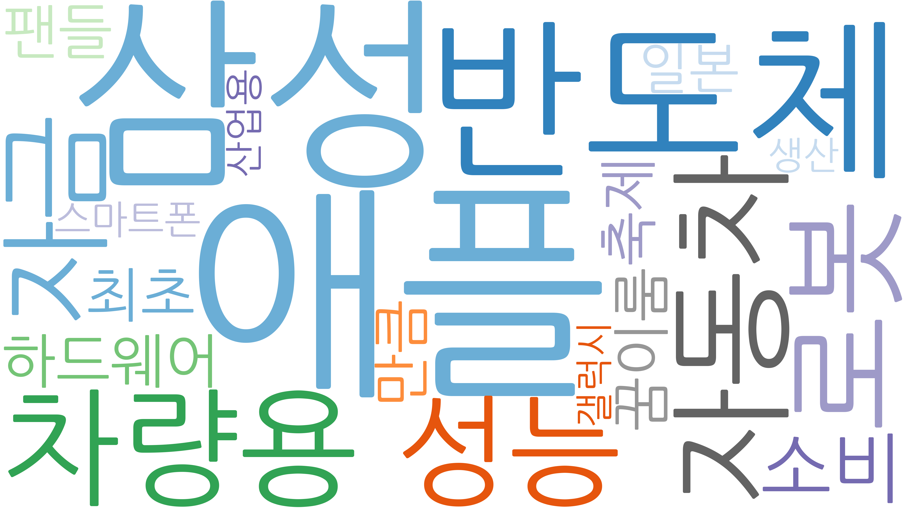 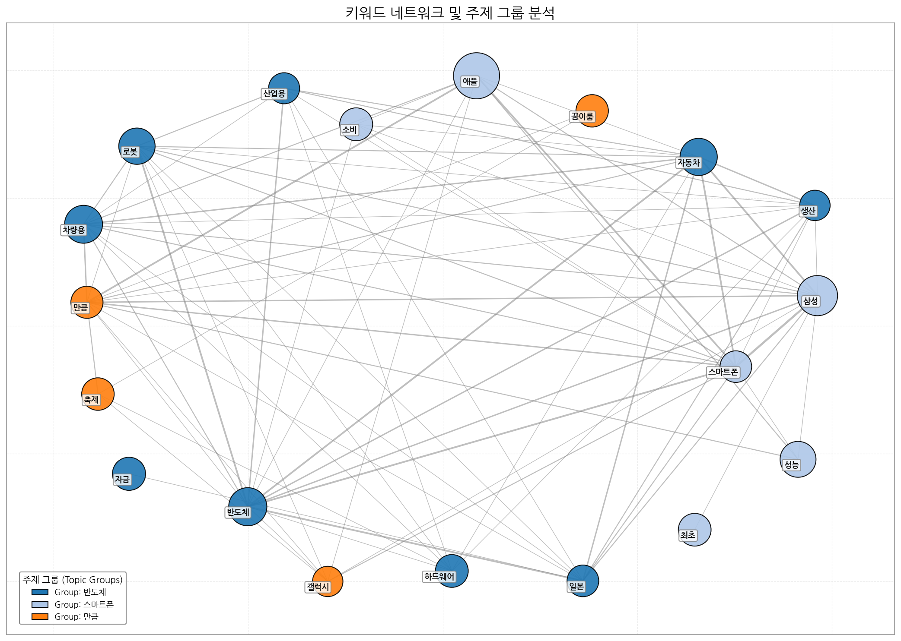
| 순위 | 키워드 | 점수 | 변화(참고) |
|---|---|---|---|
| 1 | 애플 | 1.009 | |
| 2 | 삼성 | 0.758 | |
| 3 | 반도체 | 0.678 | |
| 4 | 차량용 | 0.67 | |
| 5 | 자동차 | 0.644 | |
| 6 | 로봇 | 0.612 | |
| 7 | 성능 | 0.596 | |
| 8 | 자금 | 0.503 | |
| 9 | 소비 | 0.495 | |
| 10 | 하드웨어 | 0.492 | |
| 11 | 최초 | 0.489 | |
| 12 | 팬들 | 0.486 | |
| 13 | 축제 | 0.483 | |
| 14 | 꿈이룸 | 0.48 | |
| 15 | 만큼 | 0.47 | |
| 16 | 일본 | 0.456 | |
| 17 | 스마트폰 | 0.453 | |
| 18 | 산업용 | 0.437 | |
| 19 | 생산 | 0.418 | |
| 20 | 갤럭시 | 0.416 |
해석 가이드: 클러스터는 규제/정책, 공급망, 수요/고객 등 테마로 해석하면 빠릅니다. 그래서: 상위 키워드가 네트워크 허브와 겹치면 시장 영향력이 높은 신호일 가능성이 큽니다. 다음 액션: 해당 키워드를 포함한 토픽과 기업 교차점(매트릭스 섹션)을 확인하세요.
핵심 요약 - 관심도(X), 긍정성(Y), 성장률(색상)로 토픽 지형을 한눈에 파악합니다. - 상위 토픽의 미니 시계열로 모멘텀을 점검합니다.
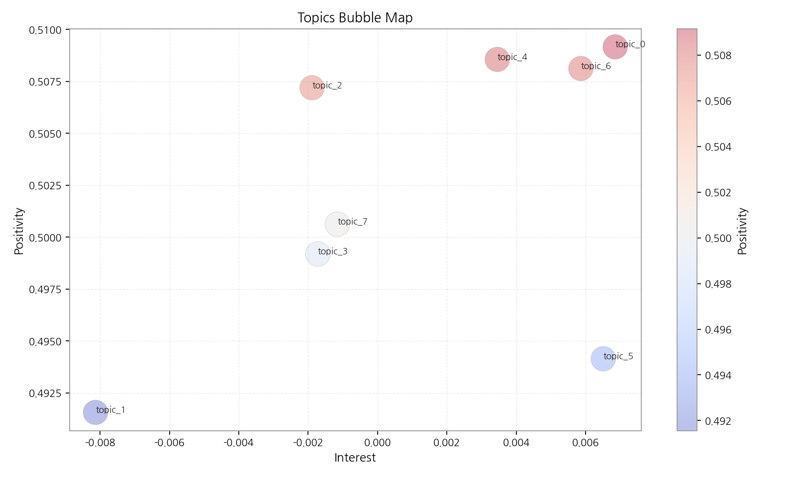 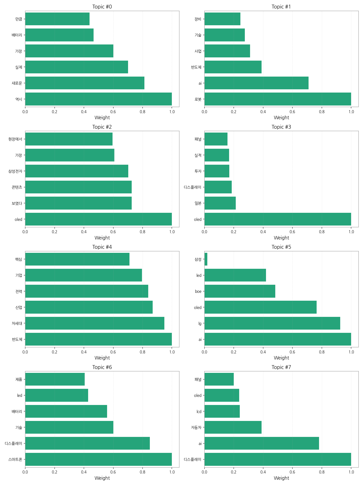
| 토픽ID | 토픽명/대표단어 | 대표단어(프리뷰) | 요약 |
|---|---|---|---|
| 0 | 역시, 새로운, 실제, 가장, 배터리, 만큼 | 역시, 새로운, 실제, 가장, 배터리, 만큼 | |
| 1 | 로봇, ai, 반도체, 사업, 기술, 장비 | 로봇, ai, 반도체, 사업, 기술, 장비 | |
| 2 | oled, 보였다, 콘텐츠, 삼성전자, 가장, 현장에서 | oled, 보였다, 콘텐츠, 삼성전자, 가장, 현장에서 | |
| 3 | oled, 일본, 디스플레이, 투자, 실적, 패널 | oled, 일본, 디스플레이, 투자, 실적, 패널 | |
| 4 | 반도체, 차세대, 산업, 전력, 기업, 핵심 | 반도체, 차세대, 산업, 전력, 기업, 핵심 | |
| 5 | ai, lg, oled, boe, led, 삼성 | ai, lg, oled, boe, led, 삼성 | |
| 6 | 스마트폰, 디스플레이, 기술, 배터리, led, 제품 | 스마트폰, 디스플레이, 기술, 배터리, led, 제품 | |
| 7 | 디스플레이, ai, 자동차, lcd, oled, 패널 | 디스플레이, ai, 자동차, lcd, oled, 패널 |
해석 가이드: 성장률이 높고 긍정성이 유지되는 토픽은 우선 탐색 대상입니다. 그래서: 토픽 성장과 기업 진입 변화가 동시에 보이면 시장 전환점일 가능성이 있습니다. 다음 액션: 상위 토픽을 기업×토픽 매트릭스에서 교차 확인하고, 기회/리스크로 분기하세요.
핵심 요약 - 가장 경쟁 치열 토픽: ai, lg - 가장 집중도 높은 기업: 삼성전자 - 최고 단일 조합: 삼성전자 × 디스플레이, ai
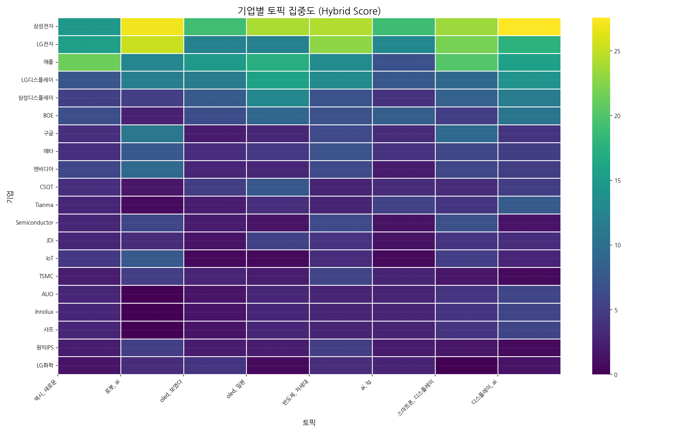 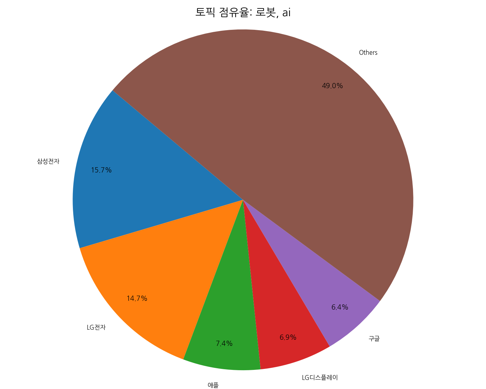 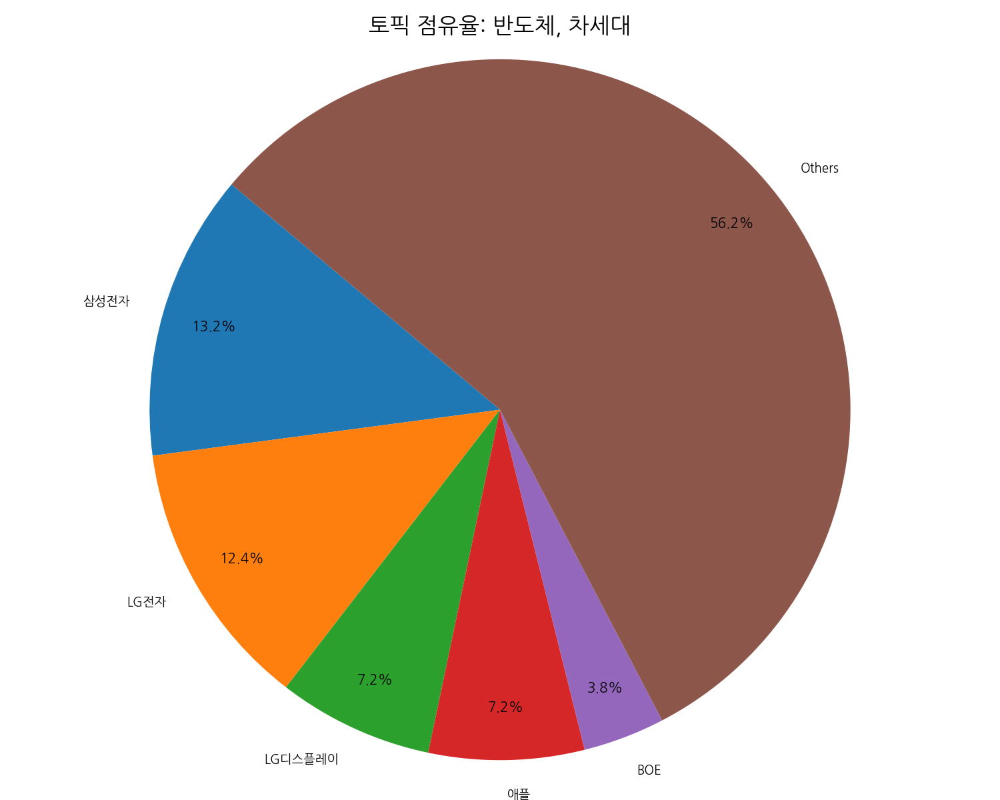 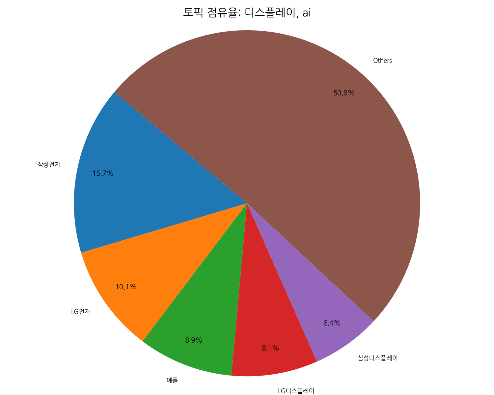 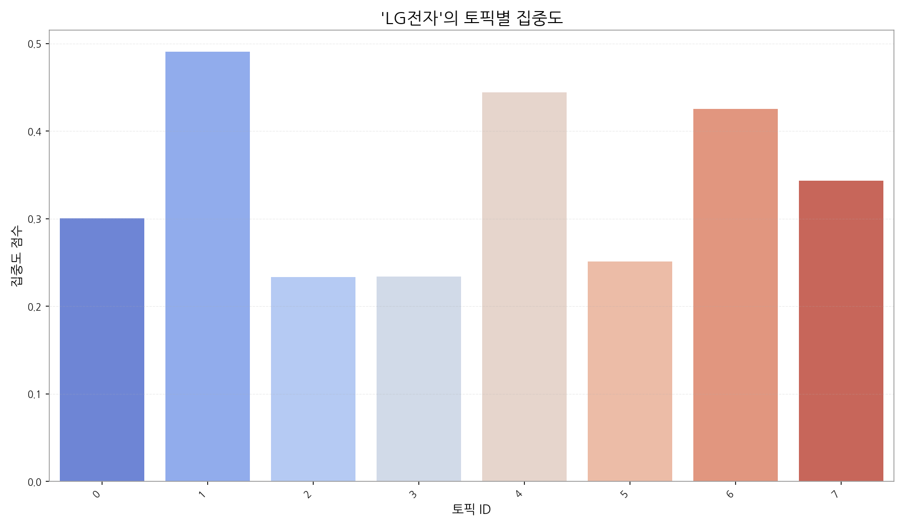 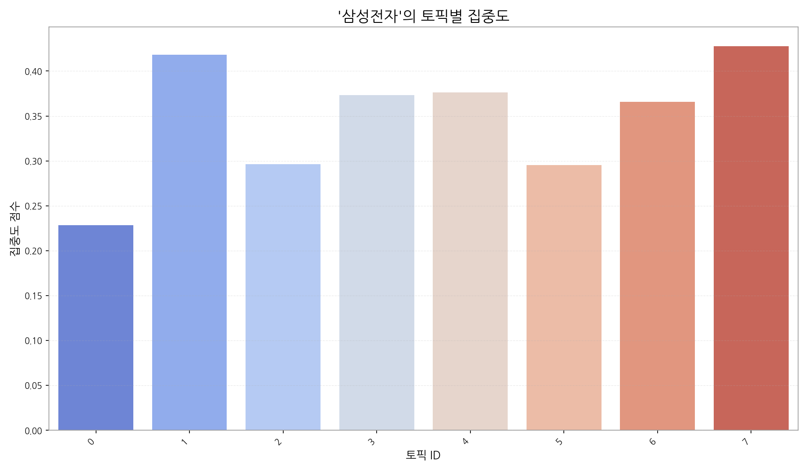 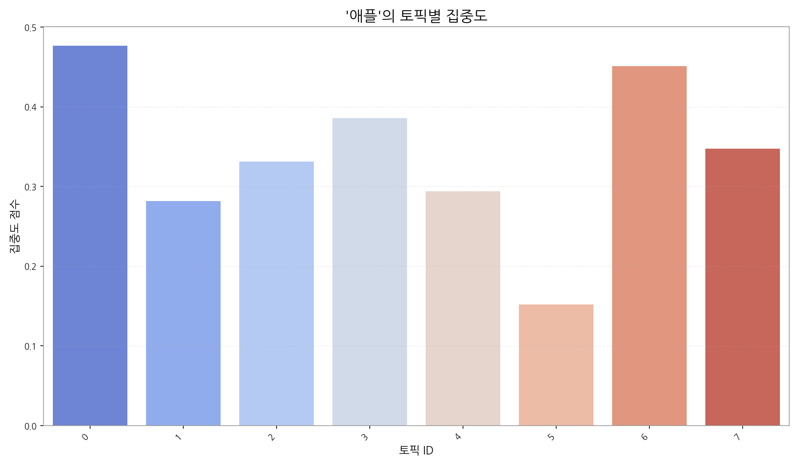
| org | topic_0 | topic_1 | topic_2 | topic_3 | topic_4 | topic_5 | topic_6 | topic_7 |
|---|---|---|---|---|---|---|---|---|
| AUO | 2.95 (2%) | nan | 1.41 (1%) | 3.01 (2%) | 2.77 (2%) | 2.72 (2%) | 4.21 (3%) | 5.66 (3%) |
| BOE | 6.63 (5%) | 2.53 (1%) | 6.36 (4%) | 9.02 (6%) | 6.93 (4%) | 8.16 (7%) | 5.05 (3%) | 10.60 (6%) |
| CES | nan | nan | 0.71 (0%) | nan | 0.69 (0%) | 0.68 (1%) | nan | nan |
| CSOT | 3.68 (3%) | 1.68 (1%) | 4.95 (3%) | 7.52 (5%) | 2.77 (2%) | 3.40 (3%) | 3.37 (2%) | 4.95 (3%) |
| Counterpoint | nan | 0.84 (0%) | nan | nan | nan | 0.68 (1%) | nan | 0.71 (0%) |
| Innolux | 2.95 (2%) | nan | 1.41 (1%) | 3.01 (2%) | 2.77 (2%) | 2.72 (2%) | 4.21 (3%) | 5.66 (3%) |
| IoT | 4.42 (3%) | 7.58 (4%) | 0.71 (0%) | 0.75 (0%) | 3.47 (2%) | 0.68 (1%) | 5.05 (3%) | 2.83 (2%) |
| JDI | 2.95 (2%) | 3.37 (2%) | 1.41 (1%) | 5.26 (3%) | 4.16 (2%) | 1.36 (1%) | 4.21 (3%) | 3.53 (2%) |
| LG디스플레이 | 7.36 (5%) | 11.79 (7%) | 11.31 (8%) | 15.79 (10%) | 13.17 (7%) | 7.48 (6%) | 9.26 (6%) | 14.14 (8%) |
| LG전자 | 15.46 (11%) | 25.27 (15%) | 12.02 (8%) | 12.03 (8%) | 22.87 (12%) | 12.92 (11%) | 21.90 (14%) | 17.67 (10%) |
| LG화학 | 1.47 (1%) | 3.37 (2%) | 4.24 (3%) | 0.75 (0%) | 3.47 (2%) | 2.72 (2%) | nan | 1.41 (1%) |
| SK하이닉스 | 1.47 (1%) | 3.37 (2%) | 4.24 (3%) | 0.75 (0%) | 3.47 (2%) | 2.72 (2%) | nan | 1.41 (1%) |
| Semiconductor | 2.95 (2%) | 5.90 (3%) | 2.12 (1%) | 1.50 (1%) | 6.24 (3%) | 1.36 (1%) | 6.74 (4%) | 1.41 (1%) |
| TCL | nan | nan | nan | nan | 0.69 (0%) | 0.68 (1%) | nan | 0.71 (0%) |
| TSMC | 2.21 (2%) | 5.05 (3%) | 2.83 (2%) | 2.26 (1%) | 5.55 (3%) | 2.72 (2%) | 1.68 (1%) | 0.71 (0%) |
| Tianma | 2.95 (2%) | 0.84 (0%) | 2.12 (1%) | 3.76 (2%) | 2.77 (2%) | 5.44 (5%) | 4.21 (3%) | 7.78 (4%) |
| Visionox | 2.21 (2%) | nan | 2.83 (2%) | 3.01 (2%) | 1.39 (1%) | 0.68 (1%) | 1.68 (1%) | 2.12 (1%) |
| 구글 | 3.68 (3%) | 10.95 (6%) | 2.12 (1%) | 3.01 (2%) | 6.24 (3%) | 3.40 (3%) | 9.26 (6%) | 4.24 (2%) |
| 기아 | 1.47 (1%) | 3.37 (2%) | 4.24 (3%) | 0.75 (0%) | 3.47 (2%) | 2.72 (2%) | nan | 1.41 (1%) |
| 마이크로소프트 | 1.47 (1%) | 1.68 (1%) | 2.12 (1%) | 2.26 (1%) | 2.77 (2%) | 1.36 (1%) | 0.84 (1%) | 2.12 (1%) |
해석 가이드: 히트맵에서 진한 교차지점은 전략 초점을 의미합니다. 점수는 소스 커버리지에 민감합니다. 그래서: 경쟁 치열 토픽에서의 점유율 변화는 공격/수비 전략 신호일 수 있습니다. 다음 액션: 상위 기업과 토픽 교차를 기회 섹션으로 연결하고, 파트너/경쟁사 움직임을 추적하세요.
핵심 요약 - 관계망 규모: 노드 21개 / 엣지 6개 - 가장 강한 관계: 삼성전자 ↔ 애플 (가중치 5, 유형 rivalry) - 허브 후보: 삼성전자 (Degree 0.25) - 브로커 후보: 삼성전자 (Betweenness 0.0737)
동일 문서/문장에서 함께 언급된 기업 쌍이며, 가중치는 동시출현 빈도입니다. 유형은 규칙 기반 추정입니다.
| Source | Target | Weight | Type |
|---|---|---|---|
| 삼성전자 | 애플 | 5 | rivalry |
| 삼성전자 | 엔비디아 | 2 | rivalry |
| 삼성디스플레이 | 삼성전자 | 2 | rivalry |
| 마이크로소프트 | 엔비디아 | 2 | rivalry |
| 구글 | 삼성전자 | 2 | rivalry |
| LG전자 | 삼성전자 | 2 | neutral |
Degree 중심성은 연결된 상대 수의 비율입니다. 높을수록 허브 성격.
| Org | DegreeCentrality |
|---|---|
| 삼성전자 | 0.25 |
| 엔비디아 | 0.1 |
| LG전자 | 0.05 |
| 구글 | 0.05 |
| 마이크로소프트 | 0.05 |
| 삼성디스플레이 | 0.05 |
| 애플 | 0.05 |
| 기아 | 0 |
| 메타 | 0 |
| 비보 | 0 |
Betweenness는 집단 간 ‘다리’ 역할 정도입니다. 높을수록 중개자 성격.
| Org | Betweenness |
|---|---|
| 삼성전자 | 0.0737 |
| 엔비디아 | 0.0263 |
| LG전자 | 0 |
| 구글 | 0 |
| 기아 | 0 |
| 마이크로소프트 | 0 |
| 메타 | 0 |
| 비보 | 0 |
| 삼성디스플레이 | 0 |
| 샤오미 | 0 |
모듈러리티 기반 자동 추출 집단. 같은 집단 내 기업은 유사 주제/밸류체인 공유 가능성. - C0: LG전자, 구글, 삼성디스플레이, 삼성전자, 애플 | 해석: LG전자 중심의 연관 클러스터 - C1: 마이크로소프트, 엔비디아 | 해석: 마이크로소프트 중심의 연관 클러스터 - C2: 기아 | 해석: 기아 중심의 연관 클러스터 - C3: 메타 | 해석: 메타 중심의 연관 클러스터 - C4: 비보 | 해석: 비보 중심의 연관 클러스터
해석 가이드: 동시출현이 높은 쌍은 경쟁/협력 가능성을 시사합니다. 그래서: 허브/브로커 포지션은 영향력/협상력을 가리킵니다. 다음 액션: 커뮤니티별 주요 토픽/키워드와 교차하여 전략 단위를 정의하세요.
핵심 요약 - 기간: 2025-09-08 ~ 2025-10-09 - 총 기사 수: 2,762 - 일별 기사 수와 7일 이동평균, 변곡점을 주석으로 표시합니다.
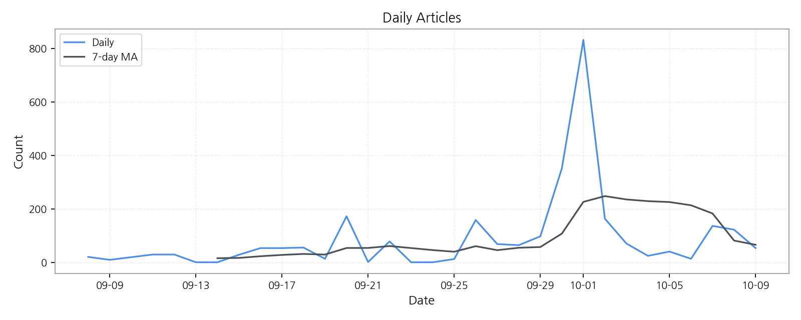
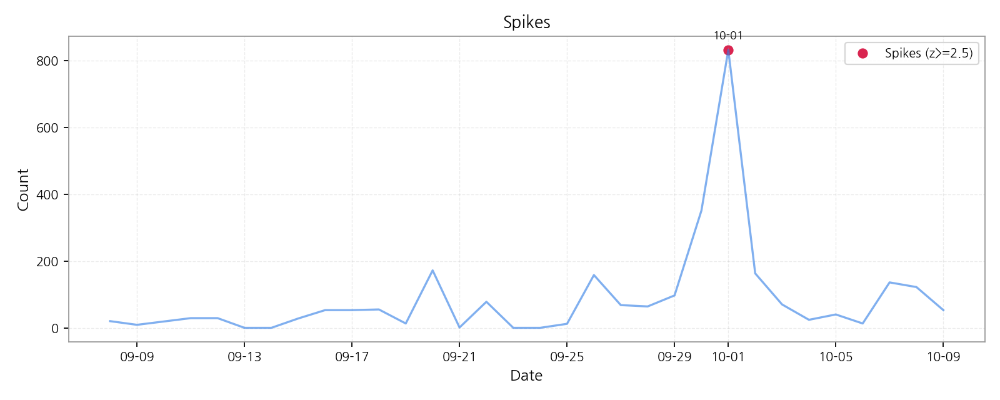
| date | count | z |
|---|---|---|
| 2025-10-01 | 832 | 4.83273 |
해석 가이드: 단기 급등은 이벤트성 가능성이 있으니 2주 추세를 함께 보세요. 그래서: 스파이크 이후 토픽/신호 방향을 교차 확인하면 원인 파악이 빨라집니다. 다음 액션: 스파이크 날짜의 주요 기사와 키워드 변동을 키워드/토픽 섹션에서 재확인하세요.
| term | cur |
|---|---|
| lg | 6 |
| 에어팟 | 2 |
| oled | 4 |
| lg전자 | 3 |
| 공급망 | 1 |
| 원익ips | 1 |
| sk하이닉스 | 1 |
| lg디스플레이 | 1 |
| 삼성전자 | 3 |
| 삼성 | 5 |
해석: 최근 뉴스에서 가장 주목받은 키워드들입니다. 값이 높을수록 강력한 주목 신호입니다.
해석 가이드: 약한 신호는 가속도와 이례성이 핵심입니다. 강한 신호는 현재의 주목도 그 자체입니다. 그래서: 약한→강한 신호 전환 구간이 기회의 창이 될 수 있습니다. 다음 액션: 약한 신호 상위 5개를 2주간 추적하고, 전환 시 기회 섹션으로 연결하세요.
핵심 요약 - 관심도(X), 긍정성(Y), 버블(사업 활발도)로 기술의 위치를 표현합니다. - 단계: Seed/Early/Growth/Mature/Legacy
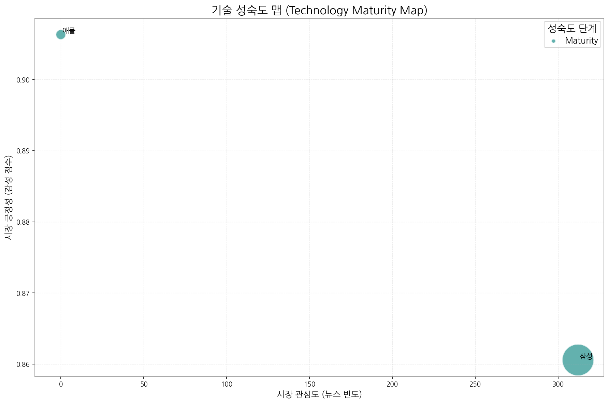
| 기술 | 단계 | 판단 근거 |
|---|---|---|
| 애플 | Maturity | 뉴스 언급 빈도가 없고, 투자, 출시, 수주 이벤트가 없어 혁신적인 성장이 멈춘 성숙기에 접어든 것으로 판단됩니다. |
| 삼성 | Maturity | 높은 뉴스 언급 빈도와 긍정적 시장 감성 점수, 그리고 투자, 출시, 수주 이벤트가 꾸준히 발생하는 것으로 보아 성숙기에 접어든 기술로 판단됩니다. |
해석 가이드: Growth 구간이면서 강한 신호 결합 시 유망합니다. 그래서: Early라도 약한 신호가 누적되면 전환 후보입니다. 다음 액션: 상위 기술 3개를 기회 섹션과 연결하고 파일럿 과제를 정의하세요.
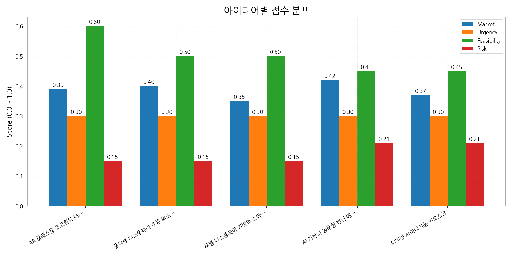
| 아이디어 | 타깃 | 가치제안 | 점수(시장/긴급/실행/리스크) |
|---|---|---|---|
| AR 글래스용 초고휘도 MicroLED 마이크로 디스플레이 | 북미 빅테크 기업 (AR/VR 기기 제조사) | 기존 OLED 대비 5배 높은 휘도와 2배 향상된 전력 효율성을 제공하여 AR 글래스의 몰입감과 사용 시간을 극대화. 초소형, 초경량 디자인으로 편안한 착용감 제공. 경쟁사 대비 20% 낮은 전력 소비. | 3.5 (0.39/0.3/0.6/0.15) |
| 폴더블 디스플레이 주름 최소화를 위한 UTG(Ultra Thin Glass) 코팅 기술 | 글로벌 스마트폰 제조사 (폴더블폰 제조사) | 폴더블 디스플레이 주름 발생률 50% 감소, 스크래치 저항성 2배 향상, 20만회 이상의 폴딩 테스트 통과. 경쟁사 대비 10% 얇은 두께로 폴더블폰 디자인 자유도 향상. | 3.3 (0.4/0.3/0.5/0.15) |
| 투명 디스플레이 기반의 스마트 윈도우 | 글로벌 건설사 및 건축 설계 회사 | 건물 에너지 효율 최대 15% 향상, 광고 및 정보 제공을 통한 새로운 수익 창출, 사용자 맞춤형 인터랙티브 경험 제공. 경쟁사 대비 30% 높은 투명도와 2배 향상된 시인성 제공. | 3.2 (0.35/0.3/0.5/0.15) |
| AI 기반의 능동형 번인 예측 및 보정 기술 | 글로벌 완성차 OEM (Tier 1 부품사 포함) | AI 기반의 실시간 번인 예측 및 자동 보정으로 디스플레이 수명 최대 30% 연장, 보증 비용 절감, 사용자 경험 극대화. 경쟁사 대비 2배 빠른 번인 예측 속도와 15% 향상된 보정 정확도 제공. | 3.1 (0.42/0.3/0.45/0.21) |
| 디지털 사이니지용 키오스크 | 글로벌 리테일 기업 및 프랜차이즈 | 고객 참여율 30% 증가, 광고 효과 2배 향상, 맞춤형 정보 제공을 통한 고객 만족도 향상. 경쟁사 대비 25% 낮은 전력 소비 및 10% 향상된 내구성 제공. | 2.9 (0.37/0.3/0.45/0.21) |
해석 가이드: 점수는 내부 가중치 기반(예: Market 0.35, Urgency 0.25, Feasibility 0.25, Risk -0.15). 그래서: 상위안은 단기 임팩트/실행 가능성이 높은 편입니다. 다음 액션: 각 아이디어에 대해 2주 파일럿(가설·대상·KPI)을 정의하고 담당 오너를 배정하세요.
해석 가이드: 부정 감성 급등은 PR·컴플라이언스·조달과 연계가 필요합니다. 그래서: 공급망 키워드와 동반 급등 시 실제 운영 리스크로 이어질 수 있습니다. 다음 액션: 영향범위가 큰 이슈는 즉시 리스크 레지스터에 등록하고 완화 액션을 실행하세요.
| hypothesis | target | kpi | owner | due |
|---|---|---|---|---|
| 토픽 A 관심도↑는 고객 니즈 증가 | SMB 고객 20명 인터뷰 | 응답률 30%/신규 리드 10건 | 사업개발팀 | 2025-10-24 |
해석 가이드: 데이터-인사이트-액션의 연결을 표준 템플릿으로 기록하세요. 그래서: 우선순위 상위 안건부터 빠르게 실험해야 기회를 놓치지 않습니다. 다음 액션: 오너/기한/KPI가 명확한 항목부터 킥오프하세요.
분석의 투명성을 확보하고, 다음 단계 분석을 위한 원천 자료를 제공합니다.
| 파일 | 수정시각 | 크기(bytes) |
|---|---|---|
| outputs/keywords.json | 2025-10-10 11:30:36 | 1535 |
| outputs/topics.json | 2025-10-10 11:30:39 | 7400 |
| outputs/trend_timeseries.json | 2025-10-10 11:30:39 | 1908 |
| outputs/trend_insights.json | 2025-10-10 11:30:46 | 5332 |
| outputs/biz_opportunities.json | 2025-10-10 11:31:26 | 20725 |
| outputs/tech_maturity.json | 2025-10-10 11:31:05 | 992 |
| outputs/company_network.json | 2025-10-10 11:31:11 | 6485 |
해석 가이드: 재현성과 감사추적을 위해 생성일, 버전, 파라미터를 함께 보관하세요. 그래서: 데이터 출처와 가공 과정을 명확히 남기면 신뢰성이 높아집니다. 다음 액션: 주요 이미지/표 생성 실패 로그도 추적 테이블로 남겨두세요.